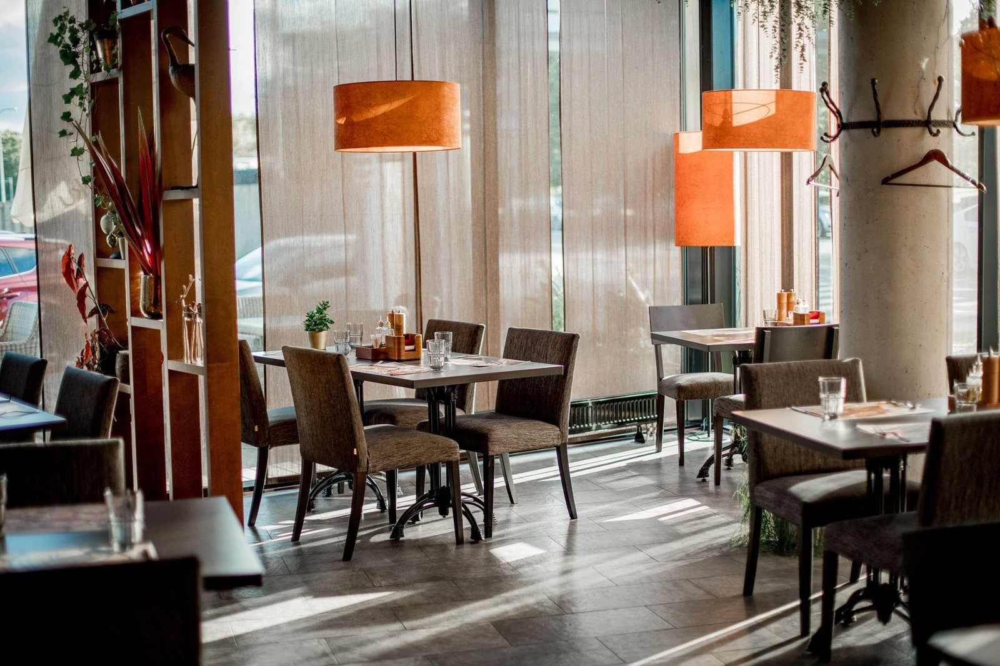
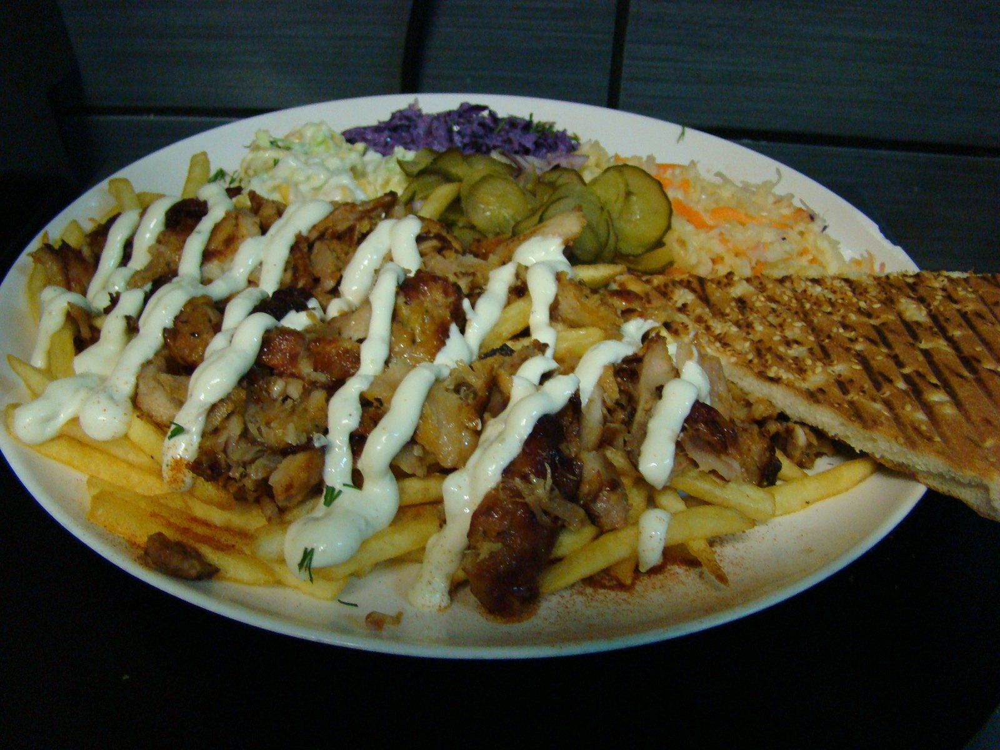

Pizza, kebaby i domowe obiady w Golubiu-Dobrzyniu - od 2003 roku. Na miejscu, na wynos i z dowozem.

Za Pizzerią Capone stoi Radek - skończył technikum gastronomiczne i od razu po szkole poszedł do zawodu. Po latach pracy w gastronomii postawił na swoje i w 2003 roku otworzył własny lokal w Golubiu-Dobrzyniu.
Dziś pracujemy tu rodzinnie, a z częścią załogi jesteśmy razem od samego początku - niektórzy od ponad dwudziestu lat. Stawiamy na świeże, regionalne produkty i wspieramy lokalnych producentów z Warmii i Mazur.
Karta się nie zmienia: pizza na puszystym cieście, kebaby, naleśniki, domowe obiady i pierogi własnego wyrobu - w dużych porcjach i uczciwych cenach. Gotujemy tak, jak sami lubimy jeść, i chyba dlatego goście wracają do nas od tylu lat.
Zapraszamy do Golubia-Dobrzynia - na miejscu albo na wynos, jak wygodniej.